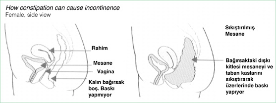

Birinci Bölüm
ÇOCUKLARDA GECE ALT ISLATMA (ENÜREZİS NOCTURNA)
Geşmişte Alt Islatma Problemi
M. Ö. 1550 yılından kalma papirüslerde gece işemelerinden söz edilmetedir.
Geçmişte enürezis nokturna (gece alt ıslatma) tedavisinde çeşitli hayvan organları ve bitkilerden elde edilen iksirlerin kullanıldığı bilinmektedir. On sekizinci yüzyılın başında alt ıslatan çocukların yataklarına kurutulmuş horozibiği sermek şeklindeki tedavi uygulamalarına rastlanmaktadır.1
Belki bugün bile ilkel bazı toplumlarda halen uygulanmakta olan tedavi yöntemleri arasında kaynatılmış tavuk kursağı, beyaz kasımpatı çayı, içinde 24 saat 13 yabani tavşan testisi bekletilmiş bir bardak kırmızı şarap ya da tavuklardan çıkarılan mide mukozasının süt içine katılarak içirilmesi sayılabilir.
Bu ilginç yöntemlerin bilim ve mantık dışı görünmelerinin yanında, modern tedavi yöntemleri kadar hassas, belki de bunlara ilham kaynağı olacak kadar mantıklı tarihsel yöntemler de dikkati çekmektedir. Uyuyan çocuğun beline kurbağa bağlamak, şartlandırma tedavisinde kullanılan alt ıslatma alarmının, yatmadan önce bol tuzlu şeyler yedirmek de antidiüretiklerle tedavinin ilkel şekilleri olarak karşımıza çıkmaktadır.2
Günümüzde Alt Islatma Problemi
Ankara’daki Çocuk Ruh Sağlığı bölümlerine getirilen çocuklardaki alt ıslatma oranı % 18-21 civarında görülmekte, ülkemizde ise alt ıslatma problemi çocuk ruh sağlığı birimlerine en sık başvuru sebepleri arasında yer almaktadır. Beş yaşındaki çocukların yaklaşık % 15’inde alt ıslatma görülmektedir. Gece alt ıslatmanın doğasında olan problem aileler için tam bir kâbus haline dönüşmektedir. Öğrencide oluşan özgüven eksikliği bilinçsiz aile yaklaşımları ile birleşince olay, çocuk için daha da içinden çıkılmaz bir hal almaktadır.
Bu çocuklar aile ve sosyal çevre içinde güvensiz, okul ortamında içe kapanık ve çoğu zaman vasat başarı düzeyinde; gezi, kamp aile ziyaretleri gibi etkinliklerde isteksizlik ayrıca pubertenin (ergenlik dönemi) gecikmesi, kronolojik yaşa göre kemik yaşındaki gelişmenin yetersiz olması gibi gelişim sorunları da yaşamaktadırlar.
Bu sebeplerden dolayı sınıf öğretmenleri ve ailelerin alt ıslatma problemini çözmeden okul başarısızlığı, özgüven problemi ve içe kapanıklığı ortadan kaldırmaları çok güçtür.
Problemin aile içinde ve okul ortamında irdelenmemesinin iki temel sebebi bulunmaktadır.
a) Ailelerin problemi önemsememeleri, eğitimcilerle paylaşmamaları veya çözümü zamana bırakmaları.
b) Okulun, alt ıslatma problemi yaşayanların ne şekilde tespit edileceği, veli ve öğrenciye ne tür bir bilgilendirme ve ne şekilde bir yönlendirme yapılacağı noktasındaki bilgi ve yöntem eksikliğinden dolayı bu problemin okul geneli fizibiletisinin ihmal edilmesi ve eylem planının bulunmaması.
Tanımlama
Tanım: Enurezis Nocturna (çocuklarda gece işemesi):
Enürezis terimi, Yunanca idrar yapmak “enourein” sözcüğünden gelmektedir. Tıbbi terminolojide çok uzun zamandan beri altını ıslatmanın her tipi için kullanılan bir kavramdır, idrar kaçırmayı (yatağı ıslatma) tanımlamak için kullanılmaktadır.3 ‘Nocturna’ kelimesi ise gece anlamına gelmektedir.
Çocuğunuz beş yaşını doldurmuş ve haftada en az iki gece altını ıslatıyorsa ‘Alt Islatma Problemi’ var demektir.
İstemdışı olan idrar çıkışına enurezis denmektedir. Bu durum daha çok gece uyku esnasında oluştuğundan ‘enurezis nocturna’ adını almaktadır. Beş yaşına kadar çocuğun ara sıra altını ıslatması normal kabul edilir. Ama beş yaşını doldurup hâlâ yatağını ıslatma durumuna enurezis denir. Bu durumdaki çocuklarda teşhisin konulabilmesi için gereken yaş alt sınırı 5’tir.
‘Enürezis Nokturna’ yani gece alt ıslatma olayı DSM-IV (Diagnostic and Statical Manuel of Mental Disorders, Fourth Edition-Amerikan Psikiyatri Birliği’nin Mental Bozukluların Tanısal ve Sayımsal Elkitabı 4. baskısında) tanı ölçütlerine göre; 5 yaşından büyük çocukların, uyku sırasında, tekrarlayıcı nitelikte, istemsiz idrar kaçırması, bu davranışın üç ay süre ile en az haftada iki kez ortaya çıkması, okul ya da sosyal yaşantı ile ilgili bir sıkıntı sebebi olması (toplumsal, mesleki işlevsellikte, okul başarısında düşmeye ve problemlere yol açması) ve durumun tıbbi bir hastalığa (şeker hastalığı, ürolojik veya nörolojik hastalıklar gibi ya da diüretik (idrar söktürücü) gibi başka bir ilacın yan etkisine) bağlı olmaması olarak tanımlanır.4
Amerikan Pediatri Akademisi tarafından, gündüz ya da gece, yatağını veya elbiselerini istemsiz olarak ıslatmak, “enürezis” olarak tanımlamıştır. “International Children’s Continence Society” kriterlerine göre ise; idrar kontrolünün kazanılmasının beklendiği yaşta istemsiz olarak ortaya çıkan idrar kaçırma (enürezis) bir hastalık olarak kabul edilir.5
Alt Islatma Probleminde Sınıflandırma
(Şekil-1)
‘Gece alt ıslatma’ problemi daha çok erkek çocuklarda görülmektedir
Beş yaşından sonra geceleri yatak ıslatma oluyorsa ‘enurezis nokturna’, gündüzleri idrar kaçırma oluyorsa ‘enürezis diurna’ dan söz edilir. ‘Gece alt ıslatma’ problemi daha çok erkek çocuklarda, ‘Gündüzleri idrar kaçırma’ problemi ise kız çocuklarda sık görülmektedir. Gün içinde giysilerini ıslatanların yaklaşık 1/3’ü sıkışma, acil işeme isteği ile birlikte idrar kaçırma (urgency) problemi yaşamaktadırlar. Bu çocuklar, tuvalete koşarken veya pantolonunu indirirken idrarlarını kaçırırlar. Genellikle kızlarda olup aşırı idrar torbası kasılması öyküsü veya oyuna dalma söz konusudur.
Gece alt ıslatma rahatsızlığı tüm davranış bozuklukları içinde en sık rastlananıdır. Bu konuda Trabzon (1992), Gümüşhane (1993), İzmir (1995) ve Konya (2002) illerinde 800 kişi üzerinde 9 yıl içinde araştırmalar yapılmıştır. Yapılan bu araştırmalara göre; her 100 çocuktan 22’si altını ıslatmaktadır. Aynı araştırmalar, bu oranın ergenlik çağında % 3’e düştüğünü ortaya koymuştur.6
Araştırmalardaki bulgulardan anlaşılmıştır ki; altını ıslatma vakıası, kırsal kesimde yaşayan çocuklarda daha sık görülmektedir. Sebebi, düzensiz beslenme ve yetersiz tuvalet eğitimine bağlanabilir.
Çocuklarda, altını ıslatma vakıasının tamamına yakını, gece meydana gelmektedir. Gündüz meydana gelen vakaların oranı sadece % 5’tir. Yine aynı araştırmanın bulgularına göre, altını ıslatma olayı; erkeklerde kızlara göre çok yüksek oranda çıkmıştır. 100 erkek çocuktan 17’si ıslak olurken bu oran kızlarda sadece % 5’dir.
Enürezis (Alt Islatma) Başlangıç Biçimi ve
Seyrine Göre İkiye Ayrılır
1. Birincil Grup Alt Islatma Problemi
Problem bebeklikten itibaren vardır ve arada hiç kuru dönem yoktur. İdrar torbası kontrollerini hiç kazanmamışlardır, bir başka deyişle bebekliklerinden beri idrar kaçırmaktadırlar alt ıslatanların % 80-90’ı bu gruptadır.
‘Alt ıslatma’ problemi olan bir çocukta durumun öneminin değerlendirilmesi ve ailenin doğru yönlendirilebilmesi için olayın birincil tip mi, yoksa ikincil tip alt ıslatma mı olduğu ve gündüzleri idrar kaçırma olup olmadığı belirlenmelidir.
2. İkincil Grup Alt Islatma Problemi
En az bir yıllık (bazı kaynaklara göre 6 aylık) idrar torbası kontrolü ve kuruluk dönemi vardır. Çocuk bir dönem tuvalet alışkanlığı kazanmış sonra yeniden altına kaçırmaya başlamıştır. Bunlar idrar kaçırma problemlerinin olmadığı bir dönem sonrasında idrar kaçırmaya başlarlar. En sık 5-8 yaşlarında görülür. Alt ıslatma olgularının % 10-20’sini oluşturur. Kardeş kıskançlığı, zorlu hayat şartları gibi psikolojik sebeplerden kaynaklanabileceği gibi idrar yolu enfeksiyonu ve sistit (idrar torbası iltihabı) gibi organik sebeplerden de kaynaklanabilir.
Birincil gruptaki gece alt ıslatma olayı, erkek çocuklarda kızlara göre iki kat daha fazla görülen bir problemdir. Alt ıslatan çocukların % 15’inde dışkı tutamama, % 15’inde de gündüz idrar kaçırma vardır. Tüm alt ıslatan çocukların yanlızca % 15’inde ikincil grup alt ıslatma olayı söz konusudur, genel olarak iyi bir değerlendirme sonrasında yapılan gruplandırmada alt ıslatan çocukların % 85’inin sadece uyurken altını ıslatan gruptan olduğu görülmektedir.7
Hangi Sıklıkta Görülür?
‘Gece alt ıslatma’ problemi (Enurezis Nocturna) ülkemizde çocuk ruh sağlığı birimlerine en sık başvuru sebepleri arasındadır. Beş yaşındaki çocukların yaklaşık % 15’inde alt ıslatma görülmektedir. Kendi kendine de düzelebilen alt ıslatmanın sıklığı yaş ilerledikçe azalmakta, erişkin yaşlarda % 1 oranında devam etmektedir.
Alt ıslatma ülkemizde çocuk psikiyatrisi polikliniklerine yapılan başvuruların en sık sebepleri arasındadır.
Alt ıslatmanın, yayılımı, sıklığı veya görülme oranı araştırmalar arasında büyük ölçüde değişmekle birlikte, Büyük Britanya’da 5 yaşındaki çocuklarda % 10 (her 10 çocuktan biri), 8 yaşındaki çocuklarda % 4 (her 25 çocuktan biri) ve 14 yaşındaki ergenlerde %1 kadardır. Alt ıslatma ülkemizde çocuk psikiyatrisi polikliniklerine yapılan başvuruların en sık sebepleri arasındadır. Ankara’daki Çocuk Ruh Sağlığı bölümlerine getirilen çocuklardaki alt ıslatma oranı % 18-21 civarındadır.
Wekke ve arkadaşlarının Hollanda’da alt ıslatmanın görülme oranını değerlendirmek için yaptıkları çalışmada 5-6 yaş grubunda %15, 13-15 yaş grubunda % 1 olarak rapor edilmiştir. 5-15 yaş arası çocuklar için genel görülme oranı %6 bulunmuştur. Alt ıslatmanın Hollanda’lı çocuklara göre orada yaşayan Fas’lı ve Türk çocuklarda daha yaygın olduğu (% 14) gösterilmiştir.
Aynı araştırmada zeka gelişimi geriliği sebebiyle özel eğitim alan çocuklarda; normal eğitim alanlara göre daha sık gece alt ıslatma görüldüğü bildirilmiştir. İlginç olarak zeka gelişimi geriliği dışında farklı sebeplerle özel eğitim veren okullara giden çocuklarda da, normal okul çocuklarına göre gece alt ıslatma sıklığı daha yüksek bulunmuştur.8
Endişe etmeyin çevrenizdeki ailelerin de en az %10’u sizinle aynı problemi yaşıyor.
Çeşitli kaynaklarda % 5-15 gibi sıklık oranları bildirilmekte, ülkemizde okul çocuklarında yapılan çalışmalarda % 20-30 gibi oldukça yüksek oranlar saptanmaktadır.9
Yapılan araştırmalara göre 5 yaşındaki erkek çocuklarda gece işemelerinin sıklığı % 7; kızlarda aynı yaşta % 3 olmak üzere toplamda bu yaş grubunda % 10 olarak saptanmıştır. Bu oranlar 10 yaşında erkeklerde % 3’e; kızlarda % 2’ye düşmektedir. 18 yaşına gelen erkeklerde % 1, kızlarda ise biraz daha düşük bir yüzdede sürebilmektedir. Bu çocuklarda yaşıtlarına göre gelişim gecikmeleri de saptanmıştır. 5 yaş sonrasında tedavisiz kendiliğinden iyileşme oranı % 5-10 arasında bulunmuştur.
Erkek çocuklarda kız çocuklardan daha fazla görülür. Ergenlik döneminde cinsiyet yönünden eşitlenir. 18-64 yaş arası sağlıklı erişkinlerin % 0,5’i düzenli olarak yataklarını ıslatırlar. Dolayısıyla alt ıslatma problemi, sınırlı ölçüde de olsa erişkin popülasyonu ilgilendiren bir sağlık problemi, aynı zamanda bir toplumsal problemdir.
Kendiliğinden Geçer mi?
Evet, kendiliğinden geçer ancak ne zaman?
DİKKAT!
Organik sebepli bir alt ıslatma probleminin varlığında çocukta bu durum böbreklerin iflasına kadar gidebilir.
Aile de bu probleme çocukla beraber 16-18 sene birlikte katlanmayı göze alıyorsa evet geçer. Zira 1129 altını ıslatan çocuğun % 3’ünün 20 yaşında hala alt ıslatmaya devam ettiğini gösteren araştırma bulguları vardır.10 Tedavi edilmediğinde bile gece alt ıslatmanın yılda ortalama % 15 oranında spontan iyileşme (doğal) gösterdiği kabul edilmektedir. Ancak bu tam bir çözüm değildir. Çünkü adolesan (ergen) ve erişkinlerde bu oran % 1-2 olarak devam etmektedir. Yaş ilerledikçe spontan (doğal kendi kendine) iyileşme oranları azaldığından, çocuklara güvenle alt ıslatma probleminin düzeleceğini söylemek yetersiz kalacaktır. Birçoğu iyileşecektir ancak bir kısmı eğer hiçbir şey yapılmazsa düzelmeyeceklerdir.11
Günümüzde her problemin bir çözümü var iken çocuk ne diye 18-20 yaşlarına kadar böyle bir problemle beraber yaşasın? Ayrıca 18 yaşına kadarki sürede çocuğun sosyal yönü büyük ölçüde baltalanmakta zira sosyal etkinliklere, yatılı programlara, gezilere katılamadığı için sürekli kendinde bir eksiklik hissetmekte ve sonuçta özgüven kaybına uğramış, sürekli tedirginlik yaşayan bir birey olarak ergenlik dönemini geçirmektedir.
Ayrıca organik sebepli bir alt ıslatma probleminin varlığında çocukta bu durum böbreklerin iflasına kadar gidebilir. Bu yüzden bu kılavuz kitap ile bu problemin nerelere kadar ulaşabileceğini örnekleyerek ailelerde farkındalık oluşturmak ve zamana bırakmaktan ziyade acilen müdahale edilmesi gerekten bir problem olduğunu kavratmak hedeflenmiştir.
Alt Islatma Sebepleri Nelerdir?
Alt ıslatma sebeplerini belirlemek güçtür. Sebep olarak birçok varsayım ileri sürülmektedir. (Şekil-2)
(Şekil-2)
A. Biyolojik Sebepler
1. Ailesel Yatkınlık (Genetik)
Enürezis de (alt ıslatma probleminde) kalıtımsal etmenler önemlidir. Fakat geçişin nasıl olduğu henüz belirlenmiş değildir. Yapılan araştırmalar alt ıslatma probleminin de ailesel bir yatkınlık olduğu görüşünde birleşmektedir. Alt ıslatan çocukların % 70-75’inin birinci dereceden akrabalarında devam eden alt ıslatma veya geçmişte alt ıslatma olduğu bildirilmektedir.12
Alt ıslatan çocukların %70-75’inin birinci dereceden akrabalarında devam eden alt ıslatma veya geçmişte alt ıslatma olduğu bildirilmektedir.
Çocuğun hem annesi hem de babası geçmişte alt ıslatma problemi yaşamış ise bu durumda çocuklarında da aynı problem % 77 oranında görülecektir. Ebeveynlerinden sadece birinin bu problemi yaşamış olması durumunda çocukta % 46, anne babasından hiçbirisinin geçmişte böyle bir problemi yaşamamış olması durumunda ise sadece ise % 15 alt ıslatma olasılığı mevcuttur.13 3206 çocuğun incelendiği İskandinavya araştırmasında, anne çocukluğunda böyle bir problemi yaşamış ise çocukta alt ıslatma ortaya çıkma riskinin 5.2 kat, baba çocukluğunda böyle bir problemi yaşamış ise aynı olasılığın 7.1 kat arttığı bulunmuştur.
Altını ıslatmanın % 70 oranında birinci derece akrabalarda da görülmesi, tek yumurta ikizlerinde oranın yüksek olması (Tek yumurta ikizlerde eş hastalanma (konkordans) oranının % 69, çift yumurta ikizlerde % 2-30 olduğu saptanmıştır.) gibi verilere dayanılarak, kalıtımın tesiri yani genetik yatkınlık kabul edilmektedir.14
Alt ıslatma problemini önemseyin
Ege Üniversitesi Tıp Fakültesi’nde yapılan bir araştırmaya göre, aile öyküsü Türkiye’deki alt ıslatanlar için de tipik bir özelliktir ve araştırma serisinde bu oran % 76’dır. Ayrıca klinik gözlemlerde aile öyküsünün, Türkiye’de ailelerin ‘alt ıslatma’ problemine yaklaşımını yönlendiren önemli bir faktör olduğu da tespit edilmiştir.
Anne babada geçmişte alt ıslatma öyküsü varsa ailelerin, çocuklardaki alt ıslatmayı fazla önemsemediği, geçmişte kendilerinde veya önceki çocuklarında olduğu gibi spontan (kendiliğinden) geçmesini bekledikleri, bu sebeple başvuru yaşının geciktiği görülmüştür.15
2. Fizyolojik Problemler
a) ‘İdrar Torbası’ Fizyolojisi Kaynaklı Problem
İki yaşındaki bir çocuğun idrar torbasının gerçek hacmi henüz oldukça küçüktür.
Ancak 4 yaşındaki bir çocukta idrar torbası, gece boşalmayacak kadar yeterli genişlemeye erişir.
5 yaşındaki bir çocuk ise refleks olmaktan çok, istemli olarak idrar yapma yeteneğini kazanır ve idrarını istemli olarak durdurması mümkündür.
Ancak 4 yaşındaki bir çocukta idrar torbası, gece boşalmayacak kadar yeterli genişlemeye erişir.
Alt ıslatan çocukların ise işlevsel idrar torbası kapasitesinin daha düşük olduğu, internal sfinkterin (iç kaslar) denen idrar torbası çıkışındaki kasların tam olarak işlev görmesinin normalde en geç 6 yaşında tamamlanmasına karşın alt ıslatma problemi olanlarda bu sürenin uzadığı bildirilmiştir.
Buradaki problem bu çocukların idrar torbalarının tam dolmadan iradelerinin dışında kasılmasından kaynaklanmaktadır.
Alt ıslatan çocukların gerçek idrar torbası kapasiteleri, anestezi ile idrar torbası kasılmaları ortadan kaldırıldığında normaldir. Fakat uyanıklık sırasında idrar torbası, gerçekten dolu olmadan kasılmaya başlar. Yani idrar torbası tam dolmadan, boşalma ihtiyacı ile ilgili işaretler gönderir. Bundan dolayı, yukarıdaki sebepten kaynaklanan alt ıslatma problemi olan çocuklar gündüz sık fakat küçük miktarlarda idrar yaparlar. Aynı kasılmalar gece uykusu sırasında da olur ve belki de daha kuvvetlidir. Bazen de çocuğun idrar torbası çıkış noktasındaki kaslarının (Resim-1) gücü normalden azdır. Bu durumda gece idrar torbası kasılır ve idrar torbası çıkış noktasındaki iç kaslar gevşerse, çocuk altını ıslatır.16
Gece altını ıslatan çocukların en az beşte birinde gündüzleri sık idrar yapma, acil idrar yapma, sıkışarak wc ye koşma gereksinimi şeklinde sıra dışı bir idrar torbası fizyolojisini yansıtan bulguları vardır.17
(Resim-1)
Mesane: (İdrar torbası)
Not: (ek bilgi) External sfinkter & İnternal sfinkter: Makatta büyük abdestimizi tutmamızı sağlayan idrar torbasında da gene idrar sızmasını engelleyen 2 şer adet kas (sfinkter) vardır. Bunlar dış (external) ve iç (internal) kaslardır. Dış kas bizim kontrolümüzdedir. Büyük abdest yapmak istediğimizde ya da idrar yapmak istediğimizde biz dış kası açarız. Çizgili kas liflerinden oluşan bu kas 1 cm. uzunluğundadır. Ancak bu kaslar yeterli gelişim düzeyine ulaştıktan sonra idrar ve dışkı kontrolü sağlanabilir. Çocuk 5 yaşına gelmiş ve hâlâ bu kaslar gelişmemişse burada problem olduğu anlamına gelir.
b) Kas Sistemindeki Gelişmenin Gecikmesi
Bazı çocukların ‘kas sistemi’ yani idrar torbalarının çıkışındaki ve normalde çocuğun kontrolünde olması gereken kasları, zamanında gelişmeyebilir (Resim-1). Bu tür çocuklara, kas sistemini geliştirme egzersizlerinin yaptırılması uygun olur. Bu egzersizler, idrar boşaltma esnasında yaptırılır. Çocuk, idrarını bir defada boşaltmaz. Boşaltım sırasında, en az 3 defa idrarını keserek kas kontrolünü geliştirir. Bu çalışma, bir uzmanın yaptığı program çerçevesinde olursa daha yararlı olacaktır. Bu egzersizlerin yapılması idrar ve dışkı atımının kontrolünde bu problemi yaşayan çocuklar için gereklidir.
c) Merkezi Sinir Sistemindeki Olgunlaşmanın Gecikmesi
Merkezi sinir sisteminin olgunlaşması gecikirse, uyku sırasında idrar kesesi kasılmaları baskı altına alınamaz. Bunun sonucunda, altını ıslatma olayı meydana gelir. Merkezi sinir sistemi, belli bir zamandan sonra, doğal olarak olgunlaşacak ve bu problem, kendiliğinden ortadan kalkacaktır.
d) Uyku Kaynaklı Problemler
• Uyanma bozukluğu: Uykuda dolu idrar torbasının algılanıp uyanılmasında güçlük çekilmesi,
• Çocuğun uykusunun çok ağır olması da, gece altını ıslatmasına sebep olur.
• Çocuğun çeşitli kaygıları çocukta depresyon yapabilir bu da uykunun ağırlaşma sebeplerinden biridir.
Altını ıslatan çocukların uykusu çok derindir. Derin uykuda idrar torbasının büzücü kasları gevşemektedir. Beyinin verdiği işeme uyarısı, çocuğu uyandırmaya yetmediğinden çocuk, altını ıslatmaktadır.
Anne ve babalar, çocuklarının genelde uykuya daldıktan 1-1, 5 saat sonra altlarını ıslattıklarını ifade etmektedirler.
Uyku evreleri ve alt ıslatma arasındaki ilişkiyi araştıran ilk çalışmalarda, alt ıslatmanın derin uykuda ortaya çıktığı ve rüya eşdeğeri olduğu ileri sürülmüştür. Daha yeni çalışmalarda ise alt ıslatmaya uyanıklık sinyallerinin öncelik ettiği, delta uykusundan (uykunun ağır, beynin yavaşladığı anlar) köken aldığı ve uyanma ile ilgili bir bozukluk olduğu vurgulanarak, her uyku döneminde görülebildiği gösterilmiştir.
Bunu destekleyen daha sonraki çalışmalarda uykunun her fazında olabildiği kanıtlanmıştır .18
Altını ıslatan çocukların ileri derecede derin uykuları olduğuna inanılmakla birlikte, uyku EEG (elektro ensefalo grafisi) çalışmaları, bunlarda derin uykunun temel yapısı ile herhangi bir anormalliğin olmadığını göstermiştir. Ebeveynler, problemin daha çok çocuğun derin uykusundan dolayı olduğuna inanırlar. Bu algılama muhtemelen, ebeveynlerin çocuğu idrar yaptırmak için kaldırmaktaki güçlüklerinden ileri gelmektedir. Fakat altını ıslatma problemi olmayan çocukların da geceleri uyandırılmaları aynı derecede güçtür. Birçok araştırmacı, alt ıslatmanın gecenin ilk üçte birlik kısmında ve yavaş dalga uykusu sırasında olduğunu bildirmektedir.
Son yapılan çalışmalarda uyku kalıbının normal olduğu gösterilmekle birlikte, alt ıslatanların normal çocuklar gibi idrar torbası dolduğunda neden uyanıp idrar yapmadıkları hâlâ cevabı verilememiş bir sorudur.19
3. Organik Problemler
Organik olmayan bir sebepten dolayı idrar tutamama enürezis (alt ıslatma) olarak adlandırılırken, organik bir rahatsızlık sebebiyle idrar tutamamaya ise idrar inkontinansı (kontrolsüz, istemeden idrar yapma ve kaçırma durumu) adı verilir.20
a) İdrar Kaçırma - Sık İdrara Gitme
Öncelikle işeme süreçlerinin tanımını yapmak gerekirse: Üriner sistem böbrekler, idrar kanalları (üreterler), idrar torbası (mesane) ve boşaltıcı kanal (üretra) dan oluşur.
Bebeklerde İşeme: Refleks İşeme
Bebeklerde işeme süreci basitçe şu şekilde işler:
• İdrar torbası belirli bir doluluğa ulaştığında kasılmalar başlar.
• Kasılmalar beyin tarafından engellenemez.
• İdrar torbası refleks olarak boşalır. (İradi değildir)
• İdrar torbası tamamen boşaltılır.
Erişkinlerde normal işeme (Şekil-3)
• İdrar torbası dolmaya başladığında, idrar torbası kasılmaları istemli olarak engellenebilir. Uygun zaman ve ortamda işeme istemli olarak başlatılabilir.
İdrar torbasını destekleyen kaslar gevşer, idrar torbasını çevreleyen kas kasılır.
NOT: İdrar yapma olayı, idrar torbası tabanında dairesel yerleşen kas tarafından kontrol edilir ki bu kas normalde idrar akımını durduran, idrar kaçmasını engelleyen bir yapıdadır. Bu kas, balonun ucundaki bir bağ gibi genelde kapalıdır, böylece idrar kaçırma engellenir. Bu kası gevşettiğimizde idrar torbası çıkımı açılır ve aynı zamanda idrar torbası duvarındaki adale kasılır ve idrarı dışarı iter. İdrarın tümü boşaldığında, kas yeniden kapanır ve idrar torbası duvarındaki kas kasılması biter ve gevşer.
İdrar torbasındaki idrar vücut dışına ‘üretra’ denilen küçük bir tüple atılır. Buna idrar yolu da denir. (üretra erkekte penis içinde seyreder penis ucundan açılır, kadında daha kısadır ve vajenin hemen yukarısına açılır.)
(Şekil-3)
En üstteki şekil erkek çocuk idrar torbası, altta kız idrar torbası.
Çocuklarda İdrar Torbası Kapasitesi
• Erişkin idrar torbası kapasitesi 500-600 mL.
• Çocuklarda idrar torbası kapasitesi
° MK= (yaş +2) x 30 mL
° Örnek: 6 yaş= (6+2)x30= 240 mL
Bu hacmin yarısına yaklaşılınca idrar yaparak idrar torbasını boşaltma isteği duyulmaya başlanır. İdrar torbasının kapasitesinin çok üstünde idrarı gerilerek depolama yeteneği vardır ancak bu durum ağrı oluşturur.
Normal bir insan günde 1200-1700 ml kadar idrar çıkarır. Bu miktar bazı durumlara bağlı olarak değişir.
İçilen su miktarı, beslenme tarzı, diüretik kullanımı, kullanılan ilaçlar, ortamın sıcaklığı, kan basıncına bağlı olarak idrar miktarı ve niteliği değişir.
İdrar Torbası Kontrolünün Gelişimi
Bir çocuk normal gelişim sürecinde; önce gece dışkı kontrolü, sonra sırasıyla gündüz dışkı kontrolü, gündüz idrar kontrolü ve gece idrar kontrolünü kazanır.21
Çocukluk çağında kişisel farklılıklar bir yana bırakılırsa, idrar torbası kontrolünün fizyolojik gelişimi dört evrede incelenebilir.
1) Birinci evre: ilk altı aylık dönemde gece ve gündüz işemeleri kasılmaları engellenemeyen refleksler ile sağlanır. Fetus ve yeni doğan, idrar torbasındaki idrarı idrar torbası düz kasının refleks kasılmaları ile sık aralıklarla (günde 20 kez) kontrolsüz olarak boşaltır.
2) İkinci evre: 6-12 aylık dönemde idrar torbasının boşalmasında reflekslerin önemi azalmaya başlar. İdrar yapma sayısı seyrekleşir ve idrar miktarı artar.
3) Üçüncü evre: 1-2 yaş döneminde idrar torbası doluşunun bilinçli olarak hissedilmesi ile işeme sayısı giderek azalır. Daha sonra, işemeyi belirli bir zaman sonrasına erteleyebilme yeteneği kazanılır. Bu dönemde idrar torbası kasılmalarının, merkezi sinir sisteminin etkisi ile baskılanması belirgin olarak artar.
4) Dördüncü evre: 3-5 yaş döneminde normal idrar torbası doluş hissi ortaya çıkar. Artık işeme arzusu hem bilinçsiz, hem de istemli olarak engellenebilmektedir. İdrar torbası tam dolu olmasa da istemli olarak işeme başlatılabilir. Ortalama dördüncü yaşla birlikte çocukların büyük çoğunluğu (% 85) erişkin işeme durumuna gelir.22
Çocuklarda İdrar Torbası Kontrolünün Yaşlara Göre Gelişimi
|
Bebek |
Refleks işeme günde 12-20 kez |
|
1-2 yaş |
İdrar torbası doluluğunu fark eder |
|
2-4 yaş |
İşeme sırasında idrarını tutabilme |
|
4-5 yaş |
İstemli işeme |
|
6-7 yaş |
Gerektiğinde idrar tutar. Erteleyebilir. |
2-4 yaşta yeterli kas kontrolü kazanılır ve 4 yaşından sonra çocuklarda normal işeme sistemi oluşur. İki yaşındaki çocukların % 25’inde, 2. 5 yaşındaki çocukların % 85’inde, 2-4 yaş arasındaki çocukların % 98’inde gündüz idrar kontrolü kazanılmıştır.
Ne kadar “sıklık”, sık idrara gitme olarak tanımlanmalıdır?
6-14 yaş arası çocuklarda günlük işeme sayısı (Şekil-4)
(Şekil-4) 3122 çocuğun katıldığı uygulamada günlük wc. ye çıkma ortalamaları 4, 4 kez olarak tespit edilmiştir.23
Yaşlara göre günlük ortalama işeme sayısı: Aşağıdaki şekilde de (Şekil-5) görüldüğü gibi 6-8 yaşlarında günlük işeme sayısı 4, 4 iken 12-14 yaşların da ise bu sayı 3, 4 olarak tespit edilmiştir.
(Şekil-5)
b) Aşırı Aktif İdrar Torbası
(Kasılması Engellenemeyen İdrar Torbası)
Çocuklarda en sık görülen işeme bozukluğudur. 5-7 yaş grubunda sıklıkla görülür.
Eğer çocuğunuzda gündüz idrar kaçırma, sıkışarak idrara gitme, küçük miktarlarda sık sık işeme, yatak ıslatma, kabızlık ve idrar yolu infeksiyonu gibi sıkıntılar yaşıyorsanız acilen bir Çocuk ürologu veya Çocuk sağlığı ve hastalıkları uzmanına başvurunuz. Zira bu çocuklarda vezikoüreteral reflü durumuda sıktır.
Aşırı aktif idrar torbası yani hiperaktif ya da kasılması engellenemeyen idrar torbası problemi olan çocuklarda aşağıdaki olaylar gözlemlenir:
° İdrar torbası tam dolmadan beyine idrar torbasının dolu olduğu uyarısı gider.
° Bazı çocuklar sık sık tuvalete gider ve idrar kaçırmayabilir.
° Bazı çocuklar sık sık idrar kaçırır.
İdrar torbasının burada en küçük bir uyarıyla kasılmasının sebebi bilinememektedir.
İdrar torbasına gelen sinirlerdeki bir problem, bu sinirlerdeki bir hastalık buna yol açıyor ve bu sayede idrar torbası aşırı derecede kasılıyor. Yani normalde sağlıklı bir insan idrar torbasına idrar dolarken, bunu hissetmeden idrarı belli bir seviyeye kadar biriktirebiliyor. Ancak aşırı aktif idrar torbası rahatsızlığı bulunan çocuklar, bu idrarı idrar torbalarında biriktiremiyorlar. İdrarları gelir gelmez, hatta idrar torbalarına çok az bir idrar gelse bile hemen idrar keseleri kasılıyor ve tuvalete gitme ihtiyacı duyuyorlar.
Aşırı Aktif İdrar Torbası Problemi,
Günlük Yaşantıyı da Olumsuz Etkiliyor
Aşırı idrar torbası kasılmalarından dolayı çocukların sık sık tuvalete çıkma ihtiyacı hissettikleri gözleniyor. Bu çocuklar günde 15-20 kez tuvalete gidebiliyorlar. Gece uykularından idrar şikayetleri yüzünden 5-6 kez uyanabiliyorlar. Bunun sonucunda da çocukların hayat kaliteleri önemli ölçüde düşmektedir.
Kişiler, sosyal hayatlarında hiçbir şey yapamıyorlar, bir yere yolculuk edemiyorlar, otobüse binemiyorlar, arabayla bir yere gidemiyorlar, sinemaya, alışverişe, gezmelere gidemiyorlar, kısacası sosyal hayatları neredeyse tamamen durduğu için bu çocukların hayat kaliteleri oldukça düşüyor Aşırı aktif idrar torbası hastalığı, başvuracağınız çocuk cerrahları, çocuk sağlığı ve hastalıkları uzmanları tarafından yapılan ürodinami testinde kolaylıkla tanısı konan ve uygun ilaçların kullanımıyla tedavisi mümkün olan bir hastalık türüdür.
c) Endokrin Kaynaklı Problemler
Şeker veya yalancı şeker hastalığında da, çok su içmeye bağlı gece işemeleri olur.
1- Yalancı şeker (Diabetes İnsipudus): Yalancı Şeker, beynimizdeki hipofiz bezinin arka lobundan vasopressin (Antidiüretik hormon=ADH)adı verilen bir hormon salgılanır. Bu hormon düz kasların kasılmasını sağlar ve kan basıncını artırır. İdrarla atılan su miktarını kontrol eder. Eksikliğinde ise, Şekersiz Diyabet=Diabetes İnsipudus görülür. Bu da gece işemelerine azda olsa sebep olabilcek ihtimallerden biridir.
2- Şeker hastalığı (Diabetes mellitus): Şeker hastalığı, yüksek kan şekeri değerleriyle bağlantılı kronik bir hastalık.
Her iki durumdada çok su içmeye bağlı gece işemeleri olabilir.
d) Geniz Eti, Kansızlık, İri Bademcikler
Alt ıslatan çocuğa sahip olan aileler bu probleme yol açmış olabilecek tüm ihtimalleri bilmek mecburiyetindedir.
Alt ıslatmanın birçok sebepten kaynaklanabilecek bir rahatsızlık olduğunu unutmamak gerekir. Bu yüzden normal çocuk üroloğuna ya da ürologa götürüldükten sonra bir de KBB uzmanının kontrol etmesi yerinde olur. Zira kansızlık, geniz eti gibi durumlar uyku esnasında kandaki oksijenin azalmasına (hipoksi) ve karbondioksitin fazlalaşmasına (hiperkapni) sebep olur. Bu durumda uyku çok ağırlaşır ve merkezi sinir sisteminin bütün sistemler üzerindeki kontrolü çok zayıflar. Sinir ve kas sisteminin hâkimiyetinin azalmasıyla da gece işemesi meydana gelir. Aileler ise hiçbir zaman alt ıslatma probleminin kansızlık, geniz eti ya da iri bademcikten de kaynaklanmış olabileceğini düşünmezler. Oysa son yıllarda geniz eti problemi olan çocuklarda yüksek oranda altını ıslatma görüldüğü ve ameliyat sonrası yakınmalarının geçtiği üzerinde durulmaktadır.
Dr. Müjgan Keskin Gökduman’ın Kartal Eğitim ve Araştırma Hastanesinde alt ıslatma problemi yaşayan 149 çocuk üzerinde yaptığı araştırmada bunlardan 41’inde (% 27, 5) soluk yolunun tıkanmasından kaynaklanan uyku sırasında zaman zaman kısa aralıklarla solunumun durması yakınması tespit edilmiştir.
Uyku apnesi (uyku sırasında zaman zaman kısa aralıklarla solunumun durması) ve horlaması olan bazı alt ıslatan çocuklarda bu belirtiler, büyümüş bademciklere ve geniz etine bağlı olarak, hava yolunun tıkanmasından kaynaklanır. Bademciklerin ve geniz etinin cerrahi olarak alınması ve bu tip vakaların birçoğunda, % 75 oranında alt ıslatma iyileşmeyle sonuçlanır.24
Hatay Tayfur Ata Sökmen Tıp Fakültesinde yapılan araştırma bulguları da bunu desteklemektedir. Soluk almayı engelleyecek düzeyde bademcik ve geniz eti olup da bunlardan ameliyat olan 300 çocuk üzerinde yapılan araştırmada bunların 92 tanesinin (% 31) ameliyat öncesinde gece alt ıslatma problemi yaşamış oldukları tespit edilmiştir. Uyku sırasında soluk alıp vermeyi engelleyecek derecede iri bademcik veya geniz eti olan çocuklar 2. 38 kat daha fazla gece alt ıslatma riski taşımaktadır.25
e) İdrar yolu Enfeksiyonları
İdrar kaçırma ve alt ıslatmanın bir sebebi de çocuklarda sık görülen idrar yollarındaki enfeksiyonlar olmaktadır. Aileler çoğu zaman yaşanan alt ıslatma problemin idrar yollarındaki enfeksiyonlardan kaynaklanmış olabileceğini düşünmemektedir.
İdrar yolu enfeksiyonu ‘İkincil Grup Alt Islatma’ vakalarının en önemli sebeplerinden birisidir
İdrar yolu enfeksiyonları yerleşme yerine göre 2 grupta ele alınabilir:
1- Aşağı üriner sistem enfeksiyonları: Sistit (idrar kesesi iltihabı) ve Üretrit (alt boşaltım kanalı iltihabı)
2- Üst üriner sistem enfeksiyonları: Akut pyelonefrit (böbrek iltihabı ve Böbrek apseleri)
İdrar yolu enfeksiyonları ve bunlara bağlı alt ıslatma ya da idrar kaçırmanın temelinde aşağıda yer alan iki problemden biri yatmaktadır:
1- İşeme Disfonksiyonu yani işeme olayının tabiatının normal düzeninin bozulması ve bunun sonrasında idrar torbasıdan böbreğe idrar geri kaçışının yaşanması. (reflü)
2- Temizlik eksikliğinden kaynaklanan problemler.
İdrar yolu enfeksiyonuna ve dolayısıyla da alt ıslatmaya sebep olan bu iki problem hakkında bilgi sahibi olmak gereklidir.
1. İşeme Disfonksiyonu (İşeme Sisteminin Bozulması)
Tanımı: Gündüz idrar kaçırma + sıkışarak idrara gitme
Eğer çocuğunuzda;
• Sıkışarak tuvalate gitme, sıkışma sırasında idrar kaçırma
• İdrar torbasını tam boşaltamama
• İdrar torbasının tam boşaltılmadan işemenin kesilmesi
• Az miktarda idrar yapma
• Günde yediden fazla tuvalete gitme
• Haftada 3 den fazla idrar kaçırma ve
• Gecede birden fazla idrar kaçırma oluyor ise
Psikolojik danışman olarak tavsiyemiz hiç beklemeden bu durumu uzman bir doktor ile özellikle Çocuk Cerrahı, Çocuk üroloğu ya da Çocuk sağlığı ve hastalıkları uzmanı ile paylaşmanızdır.
Çocuklarda İşeme Sisteminin Bozulmasının Sebebi?
• Çocuğun işeme eğitimini zamanında yanlış alması sonucunda idrar torbası boşaltma aşamasında idrar torbası tabanında idrar tutmaya yarayan ve normalde işeme esnasında gevşemesi gereken kaslarını (sfinkter ve pelvik taban kaslarını) kasarak idrarını yapmasıdır (bkz. Şekil-7. a). Çocuklar aralıklarla işeme ve işeme sonrası idrar torbasını tam boşaltamama durumuyla karşı karşıyadır. Çocuk idrar torbasını kasarken aynı anda yapılmaması gereken idrar torbası çıkışındaki kaslarını da kasması sonucunda bu durumu yaşar. (Şekil-6).
Bunun sonucunda dışarıya tahliye edilemeyen ve sıkıştırıldığı için yüksek basınca sahip olan idrar ya idrar kesesi iltihabına (sistit), ya da böbreğe geri kaçarak böbrek iltihabına sebep olur. Her ikisinin de sonucunda alt ıslatma ve idrar kaçırma problemi gözlenir.
(Şekil-6)
Çocuğunuz tuvalete gitmeyi geciktiriyor mu?
• İdrar kesesi kasılmalarının engellenmesi
Bu problemi yaşayan çocuklar İdrar torbası kası kasılması başlayınca idrarını tutmaya çalışır ve işemeyi ertelerler.
Değişik manevralar yaparlar. Vincent belirtisi. Bkz. (Şekil-7)
İdrarı tutmak için idrar torbasını destekleyen kasları sürekli çalıştırmak zorunda kalırlar
Normal işeme fizyolojisi bozulur.
Bu aynı zamanda idrar torbasında bakteri çoğalmasını artıran bir duruma yol açabilir;
Az idrara gitme,
İdrar torbasını tam boşaltamama,
Bunların her ikisi de bakteri çoğalmasının sebepleridir ve gene bunların sonucunda alt ıslatma problemi oluşabilir.
(Şekil-7) Vincent belirtisi
Eğer Çocuğunuz Sık Sık İdrar Yolu Enfeksiyonu
Geçiriyor İse Dikkat!
Bu durumda aşağıdaki bozukluktan şüphelenilmeli ve çocuk en kısa zamanda uzman bir doktora muayene ettirilmeli, tahlillerinin yapılması sağlanmalıdır.
Vezikoureteral reflü (idrar torbasıdan böbreğe idrar geri kaçışı): çocuklarda böbrek yetmezliği sebepleri arasında ilk sıralardadır ve idrar sondası takılarak çekilen röntgen tetkiki dışında tanınması son derece zordur. Bu sebeple sık idrar yolları enfeksiyonu geçiren çocuklarda bu filmin mutlaka çekilmesi gerekir
İdrar yolu enfeksiyonu çocuklarda en sık görülen enfeksiyonlar arasındadır. İdrar yolu enfeksiyonu böbreği de etkilerse böbrekte kalıcı doku yıkımı yaparak işlevlerini bozar. Tekrarlayan enfeksiyonlar böbreklerin tamamen kaybına sebep olabilir. İşte çocuklarda görülen ‘tekrarlayan idrar yolu enfeksiyonu’ sebepleri arasında ilk sırada vezikoureteral reflü (VUR) bulunur.
Böbreklerde yapılan idrar, ‘üreter’ denen uzun tüpler yoluyla idrar torbasına taşınır ve üretra (idrar kanalı, idrar yolu) yoluyla dışarı atılır. İdrar torbası doldukça tek yönde çalışan kapak mekanizması ile idrarın tekrar böbreklere kaçması engellenir. Normalde idrar torbasına gelen idrarın tekrar geriye idrar tüplerine ve böbreğe dönmesi bu yüzden mümkün değildir. Ancak bu geri kaçışı engelleyen mekanizma bozulursa idrar geriye kaçarak idrar torbasındaki enfeksiyonun böbreklere yerleşmesini kolaylaştırır. İşeme esnasında geriye kaçan idrar atılamayıp böbreklerde birikir, basıncı arttırarak zarar verebilir, ayrıca, bakteriler daha uzun süre boşaltım sisteminde kalma ve çoğalarak hastalık yapma imkanı bulurlar. İdrar boşaltım sisteminin bu enfeksiyonun etkenlerine karşı en etkili savunma silahı, bir seferde içindeki tüm idrarı boşaltmasıdır.
Çocuklarda Vezikoureteral reflü kısaca (VUR) denilen problem farklı derecelerde olabilir. bkz. (Şekil-8)
(Şekil-8)
Hafif tiplerinin kontrol altında kendiliğinden geçmesi bir süre beklenebilir. Ağır tipleri veya kendiliğinden geçmeyip enfeksiyonla birlikte olanlar cerrahi olarak tedavi edilmektedir.
Çocuk çok sık idrar yolu enfeksiyonu geçiriyorsa burada şüphelenilmesi gereken yukarıdaki durum söz konusudur:
(Şekil-6)
* İşeme disfonksiyonu: İşeme sisteminin bozulması
|
İşeme Fonksiyon |
İdrar Torbasından |
|
|
İdrar Yolu Enfeksiyonu |
||
Böbrekler İdrar Yolu Enfeksiyonundan Korunmalıdır
Çocuk çok sık idrar yolu enfeksiyonu geçiriyorsa burada şüphelenilmesi gereken bu reflü ihtimalinin varlığından, sonuçlarından ve aşağıdaki şekliyle bir tedavisinin de bulunduğundan anne babaların genel kültürel anlamda da olsa haberdar olması gereklidir.
İdrar yolu enfeksiyonu geçiren çocuklarda, çocuğu inceleyen ürolog doktor tarafından idrarın idrar torbasından böbreklere doğru geri kaçışının (reflü) olup olmadığını saptayacak özel grafilerin çekilmesi gerekli görülebilir. Eğer, reflü varsa koruyucu tedavilerle böbreklerin zarar görmesi önlenecek, ileri derece reflülerde ameliyat gerekecektir. (Şekil 8’de 4. derece ve 5. derece reflüler gibi)
Bu problem ile karşılaşan aileler uzman hekimlere başvurduklarında çocuklara aşağıdaki tetkik gerekli görüldüğü takdirde uygulanmakta ve belki de çocukların böbreklerini kaybetmeleri bu sayede önlenmektedir.
Voiding sistoüretrografi (VCUG) İdrar torbası ve alt üriner sistem incelemesi:
İdrar torbası ve üretranın (idrar kanalı) x-ışınları kullanılarak görüntülenmesidir. (Üstteki resim)
İdrar kanalına yerleştirilen sonda yardımıyla idrar kanalından idrar torbasına ışık geçirmez bir madde verilerek idrar torbası doldurulur. Sonra sonda çıkarılarak işeme öncesi, işeme sırasında ve işeme sonrası filmler çekilir. Böylece idrar torbasının, idrar yolunun ve varsa böbrek ile idrar torbası arasındaki idrar borusunda reflünün (idrar geri kaçışının) görüntülenmesi sağlanır. Çocuk sağlığı ve hastalıkları uzmanı veya çocuk ürologlarının yaptırdığı bu inceleme Vezikoüreteral reflü (İdrar torbasından böbreğe idrar geri kaçışı) tanısının vazgeçilmez yöntemidir.
İşeme Bozukluğunun Tedavisi
1. Davranışsal tedavi
• İşeme eğitimi (Zamanlı işeme)
• İdrar torbasının tamamen boşaltılması. Alaturka wc kullanımı, oturarak işeme ve pisuar kullanmama.
• Kabızlık tedavisi
• Özel alarmlı saatler
2. İlaç tedavisi
*Başvuracağınız uzman Antibiyotik (infeksiyon varlığında) tedavisi başlatabilir. Ya da
* Antikolinerjik ilaçlar (idrar torbası düz kaslarının gevşetilmesine yarayan ilaçlar.) verebilir.
Aileye düşen görev:
*İdrar torbasının sık boşaltılması ve prostat salgısı bu problemde doğal bir savunmadır. Bu yüzden ailenin görevi çocuktan tuvalete gittiğinde idrar torbasını yukarıda değinilen davranışsal tedavi kapsamında tam boşaltmasını öğütlemek olacaktır.
Çömelerek İdrar Yapmanın Tıbbi Faydası
Çömelince karın kasları kasılır, dizler karına basınç yaparlar; dolayısıyla idrar torbası baskı altında kalır. Bu şekilde yapılan işeme sonucunda idrar torbası tam boşaldığından idrar torbasında artık idrar kalmaz. Bu ise idrar yolları ve idrar torbası taşlarının oluşmasını önlediği gibi, prostat hastalığı olanlarda şikâyetlerin azalmasında da etkili olur. Çömelerek idrar yaparken hafif sol tarafa ağırlık verilmelidir. İdrar yollarının anotomisine (yapısına) en uygun olan bu pozisyonda idrar yollarının ve idrar torbası tam boşalması mümkün olmaktadır.
Nitekim Peygamber Efendimiz’in (s.a.s.) ayakta idrar yapmama konusunda uyarıları mevcuttur. (Tirmizi, Tahâret, 8; İbn Mace, Tahâret, 14)
2. Temizlik Eksikliğinden Kaynaklanan Problemler
İdrar yolu enfeksiyonları ve bunlara bağlı alt ıslatma ya da idrar kaçırmanın temelinde yatmakta olan ikinci problem temizlik eksikliğinden kaynaklanan problemdir.
Hem gece hem gündüz idrar kaçırmaya idrar yolları iltihabında ve kum dökmede sık rastlanır.
Temizlik eksikliğinden kaynaklanan idrar yolu enfeksiyonunda bu durum idrar boşaltım sisteminde bakteri çoğalması anlamına gelmektedir.
İdrar yolu enfeksiyonları özellikle kızlarda Enürezis (alt ıslatma) sebebi olabilmektedir. Ürologların bu konu da yaptıkları bir çalışmada alt ıslatan kızların % 24’ünde yalnızca antibiyotik kullanımı ile belirgin düzelme saptanmıştır. Bu sebeplerle başvuran her çocuğa ailenin rutin idrar tetkiki yaptırması gerekir. Hem gece hem gündüz idrar kaçırmaya idrar yolları iltihabında ve kum dökmede sık rastlanır.
Yapılan bir çalışmada 11 yaş altındaki çocuklardan erkeklerde % 1,1, kızlarda ise % 3 oranında belirtili ‘idrar yolu enfeksiyonu’ tespit edilmiştir. İdrar yolu enfeksiyonu, çocuklarda sık görülür. Anatomik yapılarından dolayı kızlar, bu enfeksiyona daha yatkındırlar. Erkeklerde ise, 1 yaştan önce idrar yolu enfeksiyonu daha sık görülür. Sünnet olmuş erkek çocuklarda, idrar yolu enfeksiyonu riski azalmaktadır.
En sık sebebi, bağırsaktaki bakterilerin idrar yoluna bulaşarak yukarı idrar torbasına doğru yol almalarıdır.
Çocuğun yaşı ne kadar küçükse, belirtileri anlamak da o kadar güç olur. Küçük bebeklerde, huzursuzluk, ateş, kilo alamama, kusma, idrarda değişik renk veya koku görülebilir. Daha büyük çocuklar ise; karın ağrısı, sık ve az idrar yapma, idrarda yanma, kanlı idrar, ateş, idrar kaçırma gibi şikâyetler gözlenir.
Ateş çok yüksekse, kusma, yan ağrısı varsa böbrek iltihabı düşündürür. Böbreklerin zarar görmemesi için ailenin bunu önemsemesi ve tedaviye hızla başlanması gerekir.
Bu yakınmalarla doktora başvurduğunuzda, tanı koymak için çocuktan idrar tetkiki ve idrar kültürü istenecek, kültürde saptanan mikrobun hangi antibiyotiğe hassas olduğu antibiyogram ile saptanacaktır. Uygun antibiyotik tedavisi ile çabuk sonuç alınacak, çocuk 1-2 gün içinde rahatlayacaktır.
Aileye İdrar Yolu Enfeksiyonu ile İlgili Öneriler
İdrar yolu enfeksiyonunu önlemek için alınması gereken önlemlerden bazıları:
* Gerekli oldukça tuvalete gidip idrar torbasını boşaltması konusunda uyarılmalıdır. Özellikle okul çağındaki çocuklar, okulda geçirdikleri uzun saatler boyunca tuvalete gitmeden eve gelebiliyorlar, böylece idrarın uzun süre idrar torbasında kalmasıyla enfeksiyonlara zemin hazırlıyorlar.
* Bol su içilmesi de, idrar yolu enfeksiyonundan koruyucu olacaktır.
* İç çamaşırlar günlük değiştirilmelidir.
* İdrar yolu enfeksiyonunu önlemek için alınması gereken önlemlerden diğeri de; bebeklerde bezi sık değiştirip altının kirli kalmamasını sağlamak, özellikle kızlarda alt temizliğini önden arkaya doğru yapmak önemlidir.
Sıkı iç çamaşırları da giydirmemek gerekir. Unutulmamalıdır ki ateşli bir çocukta ilk akla getirilip kontrol edilmesi gereken üç enfeksiyondan birisi idrar yolu enfeksiyonudur (diğer ikisi solunum yolu ve orta kulak enfeksiyonları).
ARAŞTIRMA 1
1- Bursa Özel Bahar Hastahanesi’nde yapılan bir araştırmada altını ıslatma şikâyeti ile gelen 164 hastanın kayıtları incelenmiş. Hastaların yaş, cinsiyet, hastalığın sebebi, tedavi süresi ve tedaviye cevap durumları şöyle tespit edilmiştir:
|
6-8 YAŞ |
9-12 YAŞ |
13 + |
|
|
ERKEK |
36 |
48 |
28 |
|
KIZ |
20 |
16 |
16 |
|
İdrar Yolu Enfeksiyonu Ve kum |
Sistit İdrar Kesesi İltihabı |
Kronik Bronşit Kronik Bademcik Geniz eti |
Organik sebep bulunamamıştır. Psikolojiktir. |
|
|
ERKEK |
% 16 |
% 16 |
% 11 |
% 57 |
|
KIZ |
% 46 |
0 |
0 |
% 54 |
Araştrmada hastalarda sebebe yönelik tedavi uygulandığı ve tedavilerin yarısının bir ayda yarısının da iki ayda kesin cevap verdiği görülmüştür. Altını ıslatmanın tamamen kaybolduğu, yani tedavide başarı oranı % 98 olduğu bu araştırmada tespit edilmiştir.
Sistit (İdrar Kesesi İltihabı) Nedir?
Yukarıdaki araştırmada görüldüğü gibi sistit (İdrar Kesesi İltihabı) % 16 çocukta alt ıslatma sebebi olarak tespit edilmiştir. Bunun hakkında kısa bir bilgi vermek gerekirse şu ön bilgiyle başlanabilir: Sağlıklı bir idrar torbasının içi temizdir ve bakteri barındırmaz. Ancak deride bağırsaklarda, anüs ve vajen bölgesinde bakteriler mevcuttur. Bu bakteriler bazen buralardan idrar boşaltım sistemine geçerek, idrar kanalından yukarıya doğru ilerleyip idrar torbasına ulaşabilirler. Normalde idrar torbası kendini bu bakterilerden koruyabilir ve onları idrarla yıkayarak atabilir.
Ancak bu bakteriler idrar torbasında kalır ve burada çoğalırsa enfeksiyona sebep olur, enfeksiyon ise idrar torbası dokusunda kızarıklık, şişme ve ağrıya sebep olur. Bu tip enfeksiyonla seyreden idrar kesesi iltihaplarına SİSTİT denir ve kadınlarda erkeklerden çok daha sık görülür.
Bu tip enfeksiyonlarda idrar torbası daha dolmadan dolu gibi hisseder ve sık idrar yapma isteği ile birlikte çok sık idrara çıkma ancak az az yapma, bazen tuvalete yetişememe, kaçırma durumları görülür. Genellikle ateş, titreme olmaz, halsizlik olabilir. Ateş ve titremelerin olması enfeksiyonun böbreklere ulaştığını düşündürür ve acil tıbbi müdahale gerektiren bir durumdur (Akut Pyelonefrit: böbrek iltihabı).
Bu araştırma da bize alt ıslatma sebepleri arasında organik sebeplerin ne denli yoğun bulunabileceğini göstermesi açısından ışık tutmuştur. Gerek İdrar Yolu Enfeksiyonu ve gerekse de İdrar Kesesi İltihabı, Kronik Bronşit, Kronik Bademcik, Geniz eti ve kum gibi problemler çocuklarda sonradan ortaya çıkan alt ıslatma problemlerinde düşünülmesi gereken sebeplerdendir.
f) Kronik Kabızlık
Aileler alt ıslatma problemi ile karşılaştıklarında bunun altında yatabilecek birçok sebep olduğunu bilmeliler. Bu yüzden çocuğun eskiden beri yaşadığı ve kronik hal almış bir kabızlık probleminden dolayı da alt ıslatma sonucu ile karşılaşmış olabileceklerini düşünmeleri gerekmekte ve uzman doktora gittiklerinde böyle bir problem varsa bunu da mutlaka uzman ürolog ile paylaşmaları gerekmektedir.
DR. Müjgan Keskin Gökduman’ın Kartal Eğitim ve Araştırma Hastanesinde 149 çocuk üzerinde yaptığı araştırmada bunlardan 35’inde (% 23,5) alt ıslatmanın yanında kabızlık problemin da olduğu tespit edilmiştir. (2006)
Kabızlık barsakların genişlemesi ve idrar torbasına baskı yapmasıyla da sonuçlanabilir. Aşağıdaki şekilde yer alan kız çocuğunda soldaki resimde durum normalken sağdaki resimde ise dışkı kitlesi ve bu kitlenin onun önündeki idrar torbasına ne denli baskı yaptığı görülmektedir. (Şekil-10)
Ayrıca uzun süredir devam eden kabızlık problemi olan çocuklarda da idrar torbası kapasitesi küçüldüğü için gece alt ıslatma ortaya çıkabilir.

(Şekil-10)
Şekil-10’da soldaki resimdeki kız çocuğunda kabızlık olmadığı için durum normal olarak görülürken sağdaki resimdeki kız çocuğunda ise kabızlık sonucu idrar kesesi üzerinde oluşan aşırı baskı görülmektedir.
*mesane: (idrar torbası)
Nadiren görülen organik sebepler ise;
• A, B, D, E vitaminleri eksiklikleri, (sağlıksız beslenme)
• Kalsiyum, magnezyum, çinko eksikliği,
• Kıl kurdu (oksiyur) gece işemelerine sebep olabilir.
Gece alt ıslatma problemi olan çocukların yaklaşık % 10’unda besin alerjisinin rol oynayabileceği düşünülmüştür. Konuyla ilgili yapılan çalışmalarda seçilmiş vakalara yüksek oranda kafein içeren içecekler, turunçgiller ve turunçgillerden hazırlanmış içecekler, yapay olarak renklendirilen yiyecekler, içecekler ve fazla şeker alımı, özellikle de öğleden sonra süt alımının kısıtlanmasının faydalı olabileceği belirtilmiştir.26
4. Gelişimsel Problemler
Bir araştırmada alt ıslatan çocuklarda pubertenin (BULÜG ÇAĞI) de geciktiği tespit edilmiştir.
Alt ıslatan (Enüretik) çocuklarda hem motor hem de dil gelişiminde gecikme olduğu saptanmıştır. Bir çalışmada alt ıslatma dışında herhangi bir problemi olmayan 35 çocukta kronolojik yaşa göre kemik yaşındaki gecikme, kontrol grubundan fazla bulunmuştur. Uzunlamasına yapılan bir alan araştırmasında alt ıslatma tanısı alan çocuklarda kontrol grubuna göre iki kat daha fazla oranda gelişimsel gecikme saptanmıştır. Bir araştırmada alt ıslatan çocuklarda büluğ çağının da geciktiği tespit edilmiştir. Birçok alt ıslatan çocukta saptanan koordinasyon problemleri gibi silik nörolojik belirtiler de gelişimsel problemlerin başka bir göstergesidir.27
5. Hormonal Etkenler
ADH (Anti Diüretik Hormon) Hormonunun Yetersiz Salgılanması:
Yüce yaratıcının koyduğu bir sistem sayesinde insan vücudunda gece uykusu esnasında hipofizin arka lobundan kana verilen ve böbreklerde idrar yapımını azaltan ADH hormonu salgılanmaktadır. Bu hormon yetersiz salgılanırsa, altını ıslatma vakası oluşur. Normalde erişkinlerde gece çıkarılan idrar miktarı gündüze oranla 3 kat kadar azalma gösterir. Hayatın ilk yılında bu ritim yoktur ve süt çocuklarında idrar çıkışı sabittir.28 Gece böbreklerin idrar üretmesini azaltan anti diüretik hormon çocuklarda yetersiz salgılandığında çocukta böbrekler geceleyin de gündüz olduğu gibi hızlı idrar üretirler ve bu da alt ıslatma olayına sebep olur.
Sağlıklı insanlarda idrar miktarı gece ADH salgısının artmasına bağlı olarak azalmaktadır. Alt ıslatmanın, ritimdeki bu bozukluklar veya böbreğin bu ritme uygun yanıt verememesine sebep olan yetersizlik sebebiyle olduğu düşünülmektedir.29
Enüretik (alt ıslatan) çocuklarda alt ıslatmayanlara göre sabah yapılan kan tahlillerinde ADH seviyeleri daha düşük bulunmuştur.
Bundan dolayı alt ıslatmanın sebeplerinden biri de ADH hormonunun gece salgılanmasındaki yetersizlik olabilir denmektedir.
B. Psikososyal Sebepler
1. Tuvalet Eğitimi ve Yanlışlar
• Tuvalet eğitimine çocuğun idrar torbası kasları üzerindeki denetimini kazanmaya başladığı 1. 5 yaş civarında başlanması en uygunu olur.
Sağlıklı çocuklar genelde 2 yaşına kadar gündüz idrar kontrolünü öğrenirler. Gece idrar kontrolünü ise; 4 yaşına kadar öğrenmiş olmaları gerekir.
• Tuvalet eğitimine erken başlama, katı tuvalet eğitimi ve anne-babanın uygunsuz veya kayıtsız tutumları alt ıslatmaya zemin hazırlayabilir. Çok erken yaşlarda tuvalet eğitimine başlamak çocuğun kızgınlığına, çok geç yaşta başlama çocuğun kendine güveninin azalmasına sebep olabilir. Bu dönemde araya giren bir stres, idrar torbası kontrolünün kazanılmasını geciktirebilir.30
• DİKKAT: Alt ıslatma bazen aşırı temiz, titiz ve düzenli bir annenin baskıcı tuvalet eğitimine karşı pasif saldırgan bir tepki niteliği de taşıyabilir.
Bu konuda bir örnek:
Çocuk 9 yaşında idi. Gece gündüz devamlı altını ıslatıyordu. Herhangi bir fiziksel bozukluğu da bulunmuyordu. Yaptığım görüşmeler sonucunda ise annenin çok titiz ve aşırı koruyucu olduğu, bu sebeple de ortalığı kirletecek düşüncesiyle 5 yaşına kadar çocuğun devamlı altının bağlandığı ve 5 yaşından sonra ise gece bezlenmesine devam edildiği, çocuk tuvaleti kullanmak istediğinde ise normal temizliğinin kendisi tarafından değil de annesi tarafından yapıldığı öğrenildi. Çocuk tepki davranışı olarak artık devamlı altını ıslatmayı tercih etmişti. Böylelikle annesine sinir krizleri geçirttirerek ondan bir nevi intikam alıyordu.
Çocuğun yeterli kas gelişimine sahip olduktan sonra tuvaletini kendi kendisine yapmasına ve kendi başına yemek yemesine, uyumasına, giyinip soyunmasına, kendi seçimlerinin olmasına, arkadaşlarının davetlerine katılmasına ve onları davet etmesine, psiko-sosyal gelişiminin tamamlanmasına sevgi ve koruyuculukta ölçülü davranarak onlara yardımcı olmalıyız. Onlara özerklik tanımalıyız.
• Çocuk tuvaletini söylemeye başlar başlamaz artık geceleri de bezsiz yatırılabilir. Tuvalet eğitimine 2. 5 yaşından sonra başlanması da alt ıslatma problemi için zemin hazırlayabilir. Uzun süre bez kullanılması çocuğun idrar torbası çevresindeki ve çıkışındaki kasların denetimini öğrenmesini geciktirebilir.
NOT: Beş yaşından sonra çocuğunuz, altını ıslatsa bile kesinlikle bez bağlamayınız. Çünkü çocuk, beze güvenerek rahatça uykusunu uyuyacak ve altını ıslatmayı alışkanlık haline getirecektir.
Tuvalete Sık Götürülen Çocuklarda İdrar Torbası Gelişmeyebilir
• İdrar torbası darlığı, genellikle yanlış tuvalet eğitiminden kaynaklanmaktadır. Çocuk, doğumunu takip eden ilk yıllarda altını ıslatmaması için sık sık tuvalete götürülürse, idrar torbasının gelişmesi engellenmiş olur. İdrar torbası gelişmeyen çocuk, ileri yaşlarda alt ıslatma problemi ile karşılaşabilir. İdrar torbası darlığı olan çocuklar, şu şekilde iyileştirilebilir. Çocuğun, tuvalete gitmeden önce iyice sıkışık duruma gelmesi tembihlenir. Böylece, ne kadar çok sıkışırsa idrar torbasına o kadar çok idrar dolacak ve torba o derece genişleyecektir. İdrar torbası, normal büyüklüğünü yakalayınca bu problem ortadan kalkacaktır. Mesane darlığı var ise bu durum gideceğiniz doktor tarafından ultrason ile rahatlıkla tespit edilebilir.
2. Zorlu Hayat Şartları
Kitabın girişinde alt ıslatma problemlerini sınıflandırırken problemin başlangıç biçimi ve seyrine göre ikiye ayrıldığını belirtmiştik.
Anne baba arasındaki geçimsizlik veya boşanma ve aile içinde huzursuzluk olması, Okula başlama, taşınma, hastaneye yatma, okuldaki başarısızlıklar, ölümler gibi zorlu hayat şartlarının ortaya çıkaracağı stres alt ıslatma ile ifade edilebilir.
1- Birincil (primer) grup enürezis: Problem bebeklikten itibaren vardır ve arada hiç kuru dönem yoktur. İdrar torbası kontrollerini hiç kazanmamışlardır, bir başka deyişle bebekliklerinden beri idrar kaçırmaktadırlar. Alt ıslatanların % 80-90’ı bu gruptadır.
2- İkincil (sekonder) gurup enürezis: Bu çocuklarda en az bir yıllık (bazı kaynaklara göre 6 aylık) idrar torbası kontrolü ve kuruluk dönemi vardır. Çocuk bir dönem tuvalet alışkanlığı kazanmış sonra yeniden altına kaçırmaya başlamıştır. Bunlar idrar kaçırma problemlerinin olmadığı bir dönem sonrasında idrar kaçırmaya başlarlar. Alt ıslatanların % 20’si bu gruptadır.
‘Zorlu hayat şartları’ kısmında ikincil gurup alt ıslatma vakalarının sebeplerinden en önemlilerine değinilmeye çalışılacaktır.
Aile düzenindeki önemli değişiklikler ve kayıplar gibi zorlu hayat şartları, özellikle sekonder (ikincil) alt ıslatma olaylarında sebepler açısından önem taşırlar. Geçici bir stres durumuna kritik bir dönemde maruz kalan çocukta sekonder (ikincil) grubuna giren alt ıslatma problemi gelişebilir.31 Anne baba arasındaki geçimsizlik veya boşanma ve aile içinde huzursuzluk olması, okula başlama, taşınma, hastaneye yatma, okuldaki başarısızlıklar, ölümler gibi zorlu hayat şartlarının oluşturacağı stres alt ıslatma ile ifade edilebilir. Bu durumlar özellikle alt ıslatma problemi yokken yeni başlayan vakalarda sebepler açısından önem taşırlar.
NOT: Anne ve babalar, çocuklarının yanında münakaşa etmemeli, aile kavgalarında çocuklarına hakem rolü yüklememeli. Eşler arasındaki problemler, çocukların olmadığı ortamda birebir görüşülüp halledilmelidir.
Gece idrar torbası fonksiyonlarının kazanılmasında hassas bir dönem olan hayatın 2. ile 4. yaşlar arasında, akut ve kronik anksiyeteye (korkuya) yol açan faktörlerin devreye girmesiyle sekonder (ikincil) alt ıslatma oluşabilir.
Aileden ayrılma, anne veya babadan birinin ölmesi, bir kardeşin doğumu, yeni bir eve taşınma, aile geçimsizliği, çocuğa kötü muamele alt ıslatmayı kolaylaştıran en sık faktörlerdendir. Ruhsal sebebe bağlanan ‘enürezis nokturna’nın (gece alt işeme) en açık örneği, aşağıda da değineceğimiz gibi kardeş kıskançlığına bağlı olanıdır.
Tuvalet eğitimini çoktan tamamlamış bir çocuk, kardeş doğumundan kısa bir süre sonra gündüz ve gece altını ıslatmaya başlar. Bu davranış bebek gibi sevilme ve ilgi çekme maksadına yönelik bir geriye dönüş davranışıdır. Çoğunlukla kısa sürüp düzelen bu durum çocuğun gerçekten itildiği ve sevgiden mahrum kaldığı durumlarda devam edebilir.32
Çocuğun gelişimindeki duyarlı bir zaman diliminde olumsuz faktörlerle karşılaşması gece işeme kontrolünü geciktirebilir. Bu duyarlı zaman dilimi 1 ile 4 yaş arası özellikle de üçüncü yıldır.33 Hayatın ilk dört yılında çocuğu etkilemesi beklenen bu olaylar 4500 çocuk üzerinde kapsamlı bir çalışmada irdelenmiş; en sık olarak rastlananlar:
Ailenin bölünmesi,
Anne ve babadan geçici olarak ayrı kalma,
Kardeş doğumu,
Ev değiştirme,
Kazalar,
Hastaneye yatma veya maruz kalınan cerrahi müdahaleler olarak özetlenmiştir.34
Bu olayları yaşamayan altı yaş çocuklarında % 6, 7 oranında, bu olaylardan 1-3 tanesini yaşayanlarda % 10, yukarıdaki olaylardan 4 veya daha üzerinde olay yaşayanlarda % 16, 1 oranında alt ıslatma (enürezis) gözlenmiştir.35 Bu tip olayların ikincil grup alt ıslatma problemi ile ilişkili olduğu bilinmektedir.36
3. Yeni Doğan Kardeş
• Yeni bir kardeşin doğumu ve sonrasında yaşanan kıskançlık ile gelen gece işemesi bir intikam alma ve tepki gösterme yolu da olabilir.
• Alt ıslatma kardeşe karşı saldırganlık duygularının ifadesi olabilir.
• Bu daha çok tuvalet eğitimini tamamlamış çocuklarda, birdenbire gelişen bir davranış bozukluğudur. Çocuk, yeni doğan kardeşine gösterilen sevgi ve ilgiye tepki olarak altını ıslatır.
• Kardeş kıskançlığını önlemek ya da en aza indirmek için, yeni kardeş doğmadan çocuk bu olaya hazırlanmalıdır. Bunun için ona kardeş sevgisi aşılanmalı, yeni doğan kardeşine niçin daha çok ilgi ve şefkat gösterilmesi gerektiği mantıklı bir şekilde anlatılmalıdır. Kardeş kıskançlığını önlemede şöyle bir pratik yöntem uygulanabilir: Yeni kardeş dünyaya geldiğinde, büyük çocuğa özlemini çektiği bir hediye alınabilir. Meselâ, bir bisiklet, hastane dönüşünde yeni doğan bebekle birlikte eve getirilip, bebeğin büyük kardeşine hediye aldığı söylenebilir. Bu şekilde, büyük çocuğunuzun dikkati bisiklet üzerine kayacak ve böyle güzel bir hediye getirdiği için kardeşine iyi duygular besleyecektir.
4. Aile İçi İletişim Eksikliği
Bu konu hakkında kayda geçen iki kız çocuğunu örnek olarak verelim:
Örnek: Çocuğun duygusal dünyasını büyük ölçüde etkileyen ev ortamı, alt ıslatma konusunda büyük rol oynamaktadır. E. 4 yaşında bir kız çocuğudur. Anne ve babasının sürekli geçimsizliğine ve tartışmalarına şahit olmaktadır. Arkadaşlarının babaları onları çocuk parkına götürdüklere halde babası E. ‘yi götürmemekte ve sabahları yuva arabasına bindirmemektedir.
E., babasının kendisini sevmediği görüşündedir. Ancak annesiyle babası arasında geçen olaylarla da çok yakından ilgilidir. Zaman zaman annesine, “Ben okuldayken de evde kavga ediyor musunuz?” sorusunu sorar. Hassas ve alıngan bir çocuk olan E, altını ıslatma korkusuyla anaokulunda öğretmenlerine zaman zaman uyumak istemediğini söyler.
E., alt ıslatma problemiyle duygusal dünyası arasındaki ilişkiyi annesine şöyle itiraf eder: “Babam beni sevmediği için eve geç geliyor. Ben de onun için altıma çişimi yapıyorum.” E. nin davranış bozukluklarının giderek artmasıyla altına büyük abdestini de yapmaya başladığı görülür.
Örnek: Yetersiz ilgi ve sevgiyle ruhsal çatışmaların ‘alt ıslatma’ problemine olan etkisi aşağıdaki örnek vakada açıkça görülmektedir. A. 11 yaşında, yatılı ilköğretimin hazırlık sınıfına henüz girmiş bir kız çocuğudur. Oyun odasında sürekli yalnız oynaması, psikolojik danışmanın dikkatini çekmiştir. Arkadaşları, geçimsizliği sebebiyle birlikte oynamak istemediklerini söylemişlerdir.
Psikolojik danışmanın görüşme isteği üzerine A., Bursa’da oturduklarını, babasının olmadığını, ailedeki dört çocuktan biri olduğunu ancak annesinin kendisini istemeden dünyaya getirdiğini söylemiştir. A., bir keresinde annesinin bir komşusuna: “Keşke son iki çocuğu doğurmasaydım” dediğini duyduğunu, birinin annesiyle evlenmek istediğini, evlendiği taktirde annesinin kendisini iyice unutacağından endişe ettiğini sözlerine eklemiştir.
A. her gece altını ıslatan ve arkadaşlarına karşı bunun ezikliğini duyan bir çocuktur. Annesinin ev değiştirmiş olmasına karşın A.’ya mektup yazmaması, onu iyice gerginleştirmiş, alt ıslatmanın yanı sıra, çalma gibi davranış bozuklukları da göstermeye başlamıştır. Psikolojik danışman ile iyi bir diyalog kuran A. bir resimde kocaman çiçeklerin üzerinde oturan ve ağlayan bir melek resmi çizmiş, bunu da “Çiçekler koparılıyor diye ağlıyor, güzel şeyleri yok etmek çok kötü.” şeklinde yorumlamıştır.
5. Çocuğun Aşırı Korunması
Bu rahatsızlık, ana-baba tarafından aşırı korunan çocuklarda sık görülmektedir. Bu tür çocuklar, sorumluluk ve güven duygusu aşılanmadığından geç olgunlaşırlar. Sonuçta, yaşlarından daha küçük kalmayı istediklerinden altlarını ıslatma eğilimini göstermektedirler. Ailenin aşırı koruyucu ve hoşgörülü tutumu ile çocukta bebeksi kalma eğilimi alt ıslatma problemi ile kendisini gösterebilir.
Bunların dışında ayrıca alt ıslatma problemi, tik, kekemelik, tırnak yeme, aşırı kıskanma, derslerde başarısızlık gibi problemlerden bir veya birkaçı ile beraber ise psikolojik kaynaklıdır.
Özellikle ikincil grup alt ıslatması olan çocuklarda idrar kaçırmanın yukarıda bazılarına değindiğimiz zorlu hayat şartları sonrasında başlayabildiği görülmektedir.
Alt Islatmaya Eşlik Eden Psikiyatrik Problemler
Çok küçük yaşlarda halledilebilecek bu problemin aileler tarafından 15-16 yaşlarına kadar sadece bilinçsizlik ve ihmalden dolayı oluruna bırakılması çocukta psikolojik, sosyal ve biyolojik açıdan geri dönülmez hasarlar da bırakabilir.
Birçok alt ıslatan (enüretik) çocukta psikiyatrik bozukluk olmamakla birlikte, bu çocuklarda psikiyatrik bozukluk olasılığının diğer çocuklardan daha fazla olduğu belirtilmektedir. Alt ıslatma tanısı alan çocukların benlik saygılarının kontrol grubuna göre daha düşük olduğunu, erken dönemde problem düzelince benlik saygısının normale döndüğünü gösteren çok sayıda çalışma vardır.37
Ancak günümüzde çok küçük yaşlarda halledilebilecek bu problemin aileler tarafından 15-16 yaşlarına kadar sadece bilinçsizlik ve ihmalden dolayı oluruna bırakılması çocukta psikolojik, sosyal ve biyolojik açıdan geri dönülmez hasarlar da bırakabilir. Hayatın her alanında olduğu gibi burada da erken müdahale şarttır.
Dikkat eksikliği, özel öğrenme güçlüğü (diskleksi), sosyal iletişim kurmada çekingenlik gibi durumlar da zaman zaman alt ıslatmaya eşlik etmektedir.
Alt ıslatma (Enürezis) Riskini Arttıran Durumlar
Yoğun psikososyal problemler içinde olan ve olumsuz çevre şartlarında yaşayan çocuklarda, bunun yanında Sosyo-ekonomik durumu düşük ailelerin çocuklarında beslenme bozukluklarına bağlı olarak bu daha çok görülmektedir.
Baba ya da annenin boşanma ya da ölüm sonucu kaybı da önemli etkenlerdendir. Özellikle daha öncesinde idrar kontrolünün sağlandığı çocuklarda sonradan 5-8 yaşları arasında idrar kaçırma bu sebeple tekrar başlayabilmektedir.
Davranış bozuklukları gösteren çocuklarda idrar torbası kapasitesinin daha sınırlı olduğu ve bu durumun daha sık gözlendiği saptanmıştır.
Yapılan çalışmalara göre ailede anne, baba ve diğer akrabaların geçmiş yaşantılarında bu problem var ise, çocuklarda da enürezis riski 5-7 kat artmaktadır
Tek yumurta ikizlerinde eş hastalanma oranının % 69, çift yumurta ikizlerde % 20-30 olduğu saptanmıştır. Bu bulgudan çıkarak ‘Gece Alt Islatma’ problemi için bir genetik yatkınlıktan söz edilebilir.
Aileye Öneriler
Nasıl olsa geçer düşüncesiyle doktora götürülmeyen çocuklar zamanında önlem alınmadığı için böbreklerini dahi kaybedebilir.
Eğer çocuğunuz idrar kaçırıyorsa telaşa kapılmayın. İdrar kaçırmaya sebep olabilecek bir tıbbi problemi varsa bu problemin tedavisi ile idrar kaçırmanın geçeceğini, eğer tıbbi bir problem yoksa ‘Gece Alt Islatma’ probleminin (Enürezis Nokturna) kendi kendine düzelebilen bir durum olduğunu unutmayın.
İdrar kaçırdığında çocuğunuza kızmayın, onu utandırmayın, başka çocukları örnek göstermeyin, cezalandırmayın. Çocuğunuza bu problemin çok da önemli olmadığını ama onu etkilediğini düşündüğünüz için bir doktora götürmek istediğinizi, tetkik ve tedavi süresince ona destek olacağınızı anlatın ve öncelikle bir çocuk hekiminden ya da ürolog hekimden randevu alın.
Nasıl olsa geçer düşüncesiyle doktora götürülmeyen çocuklar zamanında önlem alınmadığı için böbreklerini dahi kaybedebilir. Zira bazen tam idrar boşaltamama gibi durumlarda idrar yollarında iltihaplanmalar gelişip böbreklerin iflasına kadar uzanan süreçler yaşanabilir.
Ailenin Probleme Yanlış Yaklaşımı: Altını ıslatmayı çoğu aile bir hastalık olarak kabul etmez. Bunun çocuğun tembelliğinden ve yetersizliğinden olduğunu ima ederek çocuğu suçlama yoluna giderler. Çocuğu küçültücü kelimelerle suçlamaya, dışlamaya, alaya almaya ve lakap takmaya kadar gidebilir.
Çocuklara Bu Konuda Baskı, Dayak vs.
Uygulamak Problemi Nasıl Etkiler?
Yatak ıslatma, ceza ile tedavi edilemez. Tam aksine cezalandırma, ters etki meydana getirebileceği gibi, çocuğun özgüven ve direncini de kırıp psikolojik problemlere sebep olabilir. Buna rağmen, ailelerin cezalandırma uyguladıkları bilinmektedir.
En önemlisi de çocuk, altını ıslattığında akranlarıyla kıyaslanmamalı ve utandırılmamalıdır. Bu iki yöntemin menfi uygulanması, çocuğun sağlıklı gelişimi için en kötü zehirdir. Bu olumsuz yöntemlere maruz kalan çocuklar, toplumdan kopmakta ve içine kapanık olmaktadırlar.
Hatalı Yaklaşan Aileye Çocuğun Tepkisi Ne Olur?
Böyle bir durumda çocuk içine kapanmaya, kendine güvesizliğe ve çaresizliğe sürüklenir.
Hayat ve insanlar karşısında sürekli kaçak ve ürkek tavırlar içine girer.
Çocuk büyüdükçe bu hal çocuğun genel bir karakter özelliği haline gelir ve şahsiyet kırılması yaşayan bir fert olarak topluma katılır.
Yanlış Bilgiler
Normaldir, çoğu çocukta olur, büyüyünce geçer.
Amcası, dayısı gece işiyormuş sonra geçmiş, bizim çocuğumuzda da geçer.
Pek çok aile alt ıslatma probleminin bir hastalık olduğunu düşünmüyor
Tedavi olmasa da geçer, zaten bunun tedavisi de yokmuş, olsa da tedaviden sonra gene işeme oluyormuş.
Tedavi ettirmeyin yoksa ileri de kısırlık (!) olur.
Gibi yanlış bilgilerden ve utanma gibi kısmen haklı bir sebepten dolayı çoğu aile, ‘kol kırılır yen içinde kalır.’ deyip bu problemi saklamakta ve çözüm yollarını aramamaktadır.
Bu hastalık, çocukların ruh sağlığını altüst eder. Zamanla çocukların kendilerine olan saygıları azalıyor, kendilerini eksik hissediyorlar. Bu hastalığın sadece kendilerinde olduğunu, başka çocukların altlarını ıslatmadıklarını zannederler. Oysa sınıflarında en az iki tane okulda ise elli kadar arkadaşlarının aynı problemi yaşadığını bilmezler.
Bu çocukların doğal olarak yaşamları kısıtlanıyor, aile içi ilişkiler bozulabiliyor. Pek çok aile de bunun hastalık olduğunu düşünmüyor ve bu problemin belli bir yaşın üzerine sarkması durumunda kişilik bozukluğuna yol açabileceğini bilmiyor. Altını ıslatan çocuklarına şiddet uygulayan aileler yaptıkları yanlışın problemi daha da derinleştireceğini çoğu zaman düşünemiyorlar. Şiddet; dayak, genital organı yakma, penisi iple bağlama, hakaret etme gibi biçimlerde ortaya çıkabiliyor.
1 Johnson M. Nocturnal Enuresis. Urol Nurs 1998; 18 (4): 259- 275.
Ünal F. Enüresis Nokturna. Katkı Pediatri Dergisi 1996; 17 (5): 789- 802.
Wille S. Primary nocturnal enuresis in children. Backgraund and treatment. Scand J Urol Nephrol 1994; 156: 1- 48.
2 Ünal F. Enüresis Nokturna. Katkı Pediatri Dergisi 1996; 17 (5): 789- 802.
Wille S. Primary nocturnal enuresis in children. Backgraund and treatment. Scand JUrol Nephrol 1994; 156: 1- 48.
Alan US. Nocturnal Enuresis. Pediatric Nephrology 1995; 9 (3): 94- 103.
3 Austin PF, Ritchey ML. Dysfunctional voiding. Pediatr Rev 2000; 21: 109.
4 Amerikan Psikiyatri Birliği: Psikiyatride Hastalıkların Tanımlanması ve Sınıflandırılması El Kitabı, Yeniden gözden geçirilmiş Dördüncü Baskı (DSM-IV-TR), Amerikan Psikiyatri Birliği, Washington DC, 2000’den çeviren Köroğlu E, Hekimler Yayın Birliği, Ankara, 2001; 66.
5 Austin PF, Ritchey ML. Dysfunctional voiding. Pediatr Rev 2000; 21: 109.
Bosson S. Nocturnal enüresis. Clinical Evidence 2001; 5: 26873.
Robson LM. Diurnal Enuresis. Pediatrics in Rewiew 1998; 18: 40712.
6 http://www. bornovaram. com/
7 Hurley RM. “Enuresis” The difference between night and day. Pediatr in Rew 1990; 12:16771.
Wojcik LJ, Kaplaan GW. The wet child. Urol Clin North Am 1998; 25: 73543.
8 Wekke SJ, Hirasing RA, Meulmeester JF, Radder JJ. Childhood nocturnal enuresis in The Netherlands. Urology 1998; 51 (6): 1022- 6.
9 Neyzi O, Ertuğrul T, Ekşi A. Psikososyal gelişme ve problemler, çocuğun ruhsal gelişimi, Enürezis, Pediatri. İstanbul: Nobel Tıp Kitabevleri, 2002; 1420- 1421.
10 Shaffer D. Enuresis. In: Rutter M, Taylor E, Hersov L (ed). Child and Adolescent Psychiatry, London: Blackwell Science, 1994; 505- 519.
11 Hirasing RA, Van Leerdam F, Bolk-Bennink L, Lanknegt R. Enuresis Nocturna in Adults. Scand J Urol Nephrol 1997; 31: 533- 536.
Cendron M. Primary Nocturnal Enuresis: Current Concepts. American Academy of Family Physicians 1999; 59 (5): 1205- 1214.
12 Kasatura İ. Kişilik ve Özgüven. İstanbul: Evrim yayınevi, 1998: 38-9.
Walsh T, Menviell E. Disorders of Elimination. Section IX Disorders in Somatic Function, 416- 421.
Shaffer D. Enuresis. In: Rutter M, Taylor E, Hersov L (ed). Child and Adolescent Psychiatry, London: Blackwell Science, 1994; 505- 519.
Hjalmas K. Nocturnal Enuresis. Basic Facts and New Horizons. Eur Urol 1998; 3:53- 57.
Ünal F. Enüresis Nokturna. Katkı Pediatri Dergisi 1996; 17 (5): 789- 802.
13 Robson LM. Diurnal Enuresis. Pediatrics in Review 1998; 18: 407-12.
Wojcik LJ, Kaplan GW. The wet child. Urol Clin North Am 1998; 25:735- 43.
14 Zoroğlu, Salih Doç. Dr. Gaziantep Üniversitesi Tıp Fakültesi Çocuk Ruh Sağlığı ve Hastalıkları Enürezis Nocturna Seminer Notları, 2003
15 Ünal S, Akbulut A, Karabacak OR. Çocuklarda idrar kaçırma: nörolojik olmayan sebepler. Sürekli Tıp Eğitimi Dergisi 1997; 6 (4):130- 2.
16 Zoroğlu, Salih Doç. Dr. Gaziantep Üniversitesi Tıp Fakültesi Çocuk Ruh Sağlığı ve Hastalıkları Enürezis Nocturna Seminer Notları, 2003
17 Artur C. Guyton and John E. Hall. Physiological Anatomy of the Bladder, Micturıtıon.
Human Physiology and Mechanisms of the Bladder, Micturation. Human Physiology and Mechanisms of Disease, 6 th ed, 1997; 264- 265.
18 Artur C. Guyton and John E. Hall. Physiological Anatomy of the Bladder, Micturıtıon.
Human Physiology and Mechanisms of the Bladder, Micturation. Human Physiology and Mechanisms of Disease, 6 th ed, 1997; 264- 265.
19 Ruhston HG. Wetting and functional voiding disorders. Urologic Clinics of North America 1995; 22 (1): 75- 93.
* Schmitt BD. Toilet training basics. Your Child Healthy. New York: Bantam Books, 1994: 333- 337.
* Şenol S, Karacan E. Çocukların gece ve gündüz işemeleri. Sürekli Tıp Eğitimi Dergisi 1997; 6 (4): 126- 8.
* Ünal S, Akbulut A, Karabacak OR. Çocuklarda idrar kaçırma: nörolojik olmayan sebepler. Sürekli Tıp Eğitimi Dergisi 1997; 6 (4):130- 2.
20 Artur C. Guyton and John E. Hall. Physiological Anatomy of the Bladder, Micturıtıon.
Human Physiology and Mechanisms of the Bladder, Micturation. Human Physiology and Mechanisms of Disease, 6 th ed, 1997; 264-265.
21 Hellstrom AL, Hansin E, Hansson S, et al. Micturation habits and incontinence in 7yearold Swedish school entrants. Eur J Ped 1990; 149: 4347.
22 Ruhston HG. Wetting and functional voiding disorders. Urologic Clinics of North America 1995; 22 (1): 75- 93.
Schmitt BD. Toilet training basics. Your Child Healthy. New York: Bantam Books, 1994: 333- 337.
Şenol S, Karacan E. Çocukların gece ve gündüz işemeleri. Sürekli Tıp Eğitimi Dergisi 1997; 6 (4): 126- 8.
Ünal S, Akbulut A, Karabacak OR. Çocuklarda idrar kaçırma: nörolojik olmayan sebepler. Sürekli Tıp Eğitimi Dergisi 1997; 6 (4):130- 2.
23 http://www. ibtf. ibu. edu. tr/ders0607/prog3. pdf . Yrd. Doç. Dr. Gökhan Baysoy, Bolu Enürezis Sıklığı Çalışması. AİBÜ İBTF Pediatri AD.
24 Schmitt BD. Nocturnal Enuresis. Pediatrics in Review 1997; 18 (6): 183.
25 A Gökçe, S Aslan, FR Yalçınkaya, M Davarcı, YS Kaya, N Savaş, S Görür, Ş Dağlı, AN Kiper, MD Balbay. Tıkayıcı uyku apnesi olan çocuklarda adenotonsillektomi sonrası monosemptomatik enürezisteki iyileşme. 21. Ulusal Üroloji Kongresi, 30 Ekim - 3 Kasım 2010, İstanbul (Bildiri Özetleri Kitabı, sayfa: 232).
26 Egger J, Carter CH, Soothill JF, Wilson J. Effect of diet treatment on enuresis in children with migraine or hyperkinetic behavior. Clinical Pediatrics 1992; 31 (5): 302- 307.
27 Zoroğlu, Salih Doç. Dr. Gaziantep Üniversitesi Tıp Fakültesi Çocuk Ruh Sağlığı ve Hastalıkları Enürezis Nocturna Seminer Notları, 2003.
28 Shaffer D. Enuresis. In: Rutter M, Taylor E, Hersov L (ed). Child and Adolescent Psychiatry, London: Blackwell Science, 1994; 505-519.
29 Hjalmas K. Nocturnal Enuresis. Basic Facts and New Horizons. Eur Urol 1998; 3:53- 57.
30 Artur C. Guyton and John E. Hall. Physiological Anatomy of the Bladder, Micturıtıon. Human Physiology and Mechanisms of the Bladder, Micturation. Human Physiology and Mechanisms of Disease, 6 th ed, 1997; 264- 265.
31 Artur C. Guyton and John E. Hall. Physiological Anatomy of the Bladder, Micturıtıon. Human Physiology and Mechanisms of the Bladder, Micturation. Human Physiology and Mechanisms of Disease, 6 th ed, 1997; 264- 265.
32 Yörükoğlu A. Uyumsuz çocuk, Yatağa işeme ve dışkı kaçırma, Davranış Bozuklukları; Çocuk Ruh Sağlığı, Çocuğun Kişilik Gelişimi, Yetiştirilmesi ve Ruhsal Sorunları 22. Basım, Ankara: Özgür yayınları,
1998: 283- 7; 327- 33; 334- 53.
Eller D, Austin P, Tanguay S, Hamsy Y. Daytime Functional Bladder Capacity as a Predictor of Response to Desmopressine in monosymptomatic nocturnal enuresis. Eur Urol 1998; 33 (3): 25- 29.
33 Shaffer D. Enuresis. In: Rutter M, Taylor E, Hersov L (ed). Child and Adolescent Psychiatry, London: Blackwell Science, 1994; 505- 519.
Yörükoğlu A. Uyumsuz çocuk, Yatağa işeme ve dışkı kaçırma, Davranış Bozuklukları; Çocuk Ruh Sağlığı, Çocuğun Kişilik Gelişimi, Yetiştirilmesi ve Ruhsal Sorunları 22. Basım, Ankara: Özgür yayınları, 1998: 283- 7; 327- 33; 334- 53.
34 Garfinkel BD. Elimination Disorders, In: Garfinkel BD (ed). Psychiatric Disorders in Children and Adolescents, London: WB Saunders Co, 1990; 325- 336.
Janknegt RA, Smans AJ. Treatment with Desmopressin in severe nocturnal enuresis in childhood. Br J Urol 1990; 66: 535- 7.
Shaffer D. Enuresis. In: Rutter M, Taylor E, Hersov L (ed). Child and Adolescent Psychiatry, London: Blackwell Science, 1994; 505- 519.
Ünal F. Enüresis Nokturna. Katkı Pediatri Dergisi 1996; 17 (5): 789- 802.
35 Terho P. Desmopressine in nocturnal enuresis. J Urol 1991; 145:
818- 20.
36 Mikkelsen EJ. Modern Approaches to Enuresis and Encopresis Child and Adolescent Psychiatry. Philadelphia: Melwin Lewis press, 2001: 700- 705.
Yörükoğlu A. Uyumsuz çocuk, Yatağa işeme ve dışkı kaçırma, Davranış Bozuklukları; Çocuk Ruh Sağlığı, Çocuğun Kişilik Gelişimi, Yetiştirilmesi ve Ruhsal Sorunları 22. Basım, Ankara: Özgür yayınları, 1998: 283- 7; 327- 33; 334- 53.
Garfinkel BD. Elimination Disorders, In: Garfinkel BD (ed). Psychiatric Disorders in Children and Adolescents, London: WB Saunders Co, 1990; 325- 336.
37 http://www. gata. edu. tr/dahilibilimler/cocuk ruh ders notları